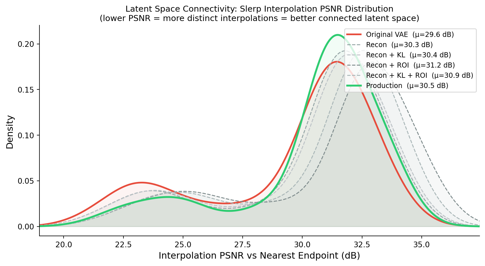
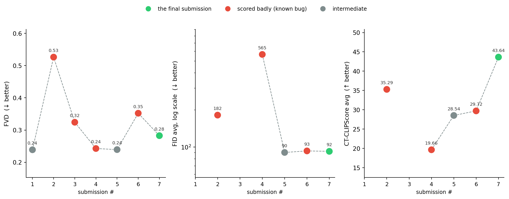

CTFlow v2: a connected latent space, and a week of very dumb bugs
Published
September 21, 2026
This is a retrospective on our second submission to the VLM3D / CT-RATE text-to-CT challenge — a text-conditioned generative model that turns a radiology report into a synthetic chest CT volume. Last year’s system worked. This year we went after the two things we thought were actually limiting it — the VAE and classifier-free guidance — and then spent the final submission cycle fighting a string of very unglamorous bugs to get the result out the door. Both halves are worth writing down.
Links: model + inference code · training code (this repo, no weights) · synthetic dataset (link added once the generation run finishes — see the end of this post).
Every figure below (VAE connectivity grid, PSNR-KDE plot, and the submission-score chart) is a live matplotlib cell reading from the small cached arrays in data/ — click “Show the plotting code” on any of them to see exactly how it’s drawn.
The architecture, briefly
CTFlow generates a CT volume autoregressively, block by block, in the latent space of a VAE. A flow-matching transformer (STDiT-style) predicts each new 16-frame latent block conditioned on (a) a text embedding of the radiology report, encoded with BiomedVLP-CXR-BERT, and (b) the previous block, so the model has continuity information to extend from. A learned super-resolution adapter upsamples the final in-plane resolution to 512×512. This backbone didn’t change between last year and this year — what changed is the VAE it decodes into, whether it was trained with classifier-free guidance, and, in the final weeks, a long list of inference-time fixes.
Last year’s submission script was inference_bs_h_2gpus.py, running the base STDiT checkpoint (checkpoint-680000) against the stock VAE, no guidance dropout during training (p_drop_conditionning: 0.0 — the model was never taught to produce a meaningful unconditional prediction).
Change 1: fine-tuning the VAE for latent connectivity
The stock VAE reconstructs individual CT slices fine, but its latent space isn’t connected in the sense that matters for flow matching: take two real latents, interpolate between them, decode the midpoint, and you often get an anatomically implausible image — ghosting, structural artifacts, tissue that doesn’t correspond to any real CT. If the transformer’s flow-matching process has to pass through regions of latent space like that on its way from noise to a valid sample, that’s a direct tax on generation quality.
We measure this with interpolated FID (iFID), following Xu et al.: encode two samples, slerp to the midpoint, decode, and compute FID of the decoded midpoints against real data. A model with a well-connected latent space produces midpoints that still look like real CT; a disconnected one doesn’t. The gap between iFID and ordinary reconstruction FID (rFID) is a direct measure of how much worse interpolated latents are than latents straight from the encoder — that’s what we’re targeting.
ROI-aware connectivity loss
Generic connectivity losses (DINO-feature alignment, EQ-VAE-style geometric consistency) exist for natural images, but they don’t account for something specific to medical volumes: diagnostic content is concentrated in high-gradient regions (organ boundaries, lesions, tissue interfaces), while large areas — background, uniform soft tissue — carry almost no signal (on abdominal CT, ~98% of spectral energy sits in low-frequency components). Enforcing uniform connectivity everywhere wastes loss budget on regions nobody cares about.
So during VAE fine-tuning, for each training pair \((x_a, x_b)\) in a batch we:
Encode both, take the posterior means \(z_a, z_b\).
Slerp to a midpoint \(\hat z_{ab}(\alpha)\) (spherical, not linear, to respect the Gaussian prior), decode it to \(\hat x_{ab}\).
Build a binary ROI mask from a Sobel edge map of \(x_a\) and \(x_b\) (union of both), thresholded at 0.1 of the max gradient magnitude.
Compute the connectivity loss as the minimum LPIPS distance, restricted to the ROI mask, between \(\hat x_{ab}\) and each of the two endpoints:
\[
\mathcal{L}_{\text{ROI}} = \min\Big(
d_{\text{LPIPS}}(\hat x_{ab}\!\odot\! M, x_a\!\odot\! M),\;
d_{\text{LPIPS}}(\hat x_{ab}\!\odot\! M, x_b\!\odot\! M)
\Big)
\]
The min (rather than forcing the midpoint to match a pixel-blend of both endpoints) just asks that the midpoint stay plausible with respect to at least one endpoint in the regions that matter — a much easier and more honest target than exact interpolation.
Full objective: standard reconstruction (L1 + LPIPS + adversarial) + KL + this connectivity term, with two schedules layered on top — KL ramps linearly from step 1,000–3,000 to a plateau of 1e-2 (immediately turning on all losses destabilizes the encoder early), and the ROI weight has a delayed ramp (steps 2,000–5,000, up to 0.15) followed by cosine annealing down to 0.075 by step 10,000, so reconstruction gets to refine cleanly in the back half of training. We also supervise multiple interpolation points per pair (\(\alpha \in \{0.3, 0.5, 0.7\}\)), not just the midpoint.
Figure 1: Six pairs of CT slices (columns), decoded and slerp-interpolated through the original vs. fine-tuned VAE (rows). Red border = disconnected; green border = connected.
Recon columns show that fine-tuning doesn’t cost reconstruction quality — both VAEs faithfully reproduce the input. The Slerp columns are the actual test: decode the midpoint between \(z_i\) and \(z_j\) with no real image ever having produced it. With the original VAE, that midpoint is visibly broken — a fine-grained checkerboard texture stamped over blurred, structurally wrong anatomy, worse the further apart the two source slices are (see column 4, where \(z_j\) is a mostly-empty top-of-lung slice). With the fine-tuned VAE, the same midpoints look like plausible intermediate anatomy: coherent organ boundaries, no grid artifacts, structure that’s obviously between the two endpoints rather than a broken average of them. This is the failure mode the connectivity loss is directly targeting, made visible.
Did it work
Method
PSNR ↑
rFID ↓
iFID ↓
Gap ↓
Pretrained VAE
37.40
12.30
67.85
55.55
Recon only
38.33
16.72
62.07
45.35
Recon + KL
38.36
18.09
60.42
42.32
Recon + ROI
38.16
16.07
53.72
37.65
Recon + KL + ROI
37.73
16.67
51.23
34.56
Production (all + schedules + multi-α)
37.44
17.39
39.88
22.49
The production configuration cuts the disconnection gap by ~60% relative to the pretrained baseline (55.55 → 22.49), at the cost of a few points of rFID — a reasonable trade given rFID measures something we don’t directly optimize for generation quality. We also looked at the distribution, not just the mean:
Show the plotting code
from scipy.stats import gaussian_kded = np.load("data/psnr_kde_values.npz")RUNS = [ ("Original VAE", "Original_VAE"), ("Recon", "Recon"), ("Recon + KL", "Recon_plus_KL"), ("Recon + ROI", "Recon_plus_ROI"), ("Recon + KL + ROI", "Recon_plus_KL_plus_ROI"), ("Production", "Production"),]COLORS = {"Original VAE": "#e74c3c", "Recon": "#95a5a6", "Recon + KL": "#bdc3c7","Recon + ROI": "#7f8c8d", "Recon + KL + ROI": "#aab7b8", "Production": "#2ecc71",}LWIDTHS = {k: 1.2for k, _ in RUNS}; LWIDTHS["Original VAE"] =2.2; LWIDTHS["Production"] =2.5LSTYLES = {k: "--"for k, _ in RUNS}; LSTYLES["Original VAE"] ="-"; LSTYLES["Production"] ="-"all_psnrs = {label: d[key] for label, key in RUNS}fig, ax = plt.subplots(figsize=(9, 5))x_min =min(p.min() for p in all_psnrs.values()) -1x_max =min(max(p.max() for p in all_psnrs.values()) +1, 50)xs = np.linspace(x_min, x_max, 500)for label, psnrs in all_psnrs.items(): kde = gaussian_kde(psnrs, bw_method=0.3) ys = kde(xs) ax.plot(xs, ys, label=f"{label} (μ={np.mean(psnrs):.1f} dB)", color=COLORS[label], linewidth=LWIDTHS[label], linestyle=LSTYLES[label]) ax.fill_between(xs, ys, alpha=0.06, color=COLORS[label])ax.set_xlabel("Interpolation PSNR vs Nearest Endpoint (dB)", fontsize=12)ax.set_ylabel("Density", fontsize=12)ax.set_title("Latent Space Connectivity: Slerp Interpolation PSNR Distribution\n""(lower PSNR = more distinct interpolations = better connected latent space)", fontsize=11)ax.legend(fontsize=9, loc="upper right")ax.spines[["top", "right"]].set_visible(False)ax.set_xlim(x_min, x_max)plt.tight_layout()plt.show()

Figure 2: KDE of per-sample interpolation PSNR across VAE variants (lower = more distinct, better-connected interpolations).
For each validation sample, slerp it against its nearest neighbor, decode, and take the higher of its PSNR against either endpoint — lower PSNR means the decoded midpoint is genuinely distinct from both endpoints, not just a copy of the closer one. The production model and the pretrained VAE both have a real mass of low-PSNR (genuinely novel, non-collapsed) midpoints, while the ablation variants concentrate at higher PSNR — i.e. their “interpolations” are closer to just reproducing an endpoint. Schedule and multi-α mattered; none of the individual loss terms alone got us there.
Change 2: classifier-free guidance
Last year’s base checkpoint was trained with p_drop_conditionning: 0.0 — text conditioning was never dropped during training, so there’s no learned unconditional branch and no meaningful way to apply CFG at inference. This year’s spacing fine-tuning runs (both the initial round and the continuation) set p_drop_conditionning: 0.1, the standard 10% text-dropout rate, specifically so we’d have that capability.
Where this stands is an open question, not a result. We swept guidance scale at inference and didn’t see a clear, consistent improvement — sometimes better, sometimes not, nothing we could point to as a reliable win. We don’t have a solid explanation yet (interaction with the autoregressive block conditioning? the previous-block signal already gives the model plenty to condition on, diluting what dropping the text branch alone accomplishes?), and we didn’t have time to run it down properly this cycle. The production model ships without CFG applied at inference, even though it was trained to support it. Flagging this honestly rather than pretending it was resolved.
The submission cycle: what actually broke
Everything above was settled weeks before the deadline. The last stretch was a different kind of work — real-submission debugging under a $35-per-run cost and a hard clock, most of it self-inflicted complexity we then had to dig back out of. Every point below is a real, scored submission, not a local ablation:
Show the plotting code
import pandas as pddf = pd.read_csv("data/eval_progression.csv")x =range(len(df))COLOR_MAP = {"red": "#e74c3c", "green": "#2ecc71", "grey": "#7f8c8d"}colors = [COLOR_MAP[c] for c in df["color"]]metrics = [ ("fvd", "FVD (↓ better)", False), ("fid_avg", "FID avg, log scale (↓ better)", True), ("clip_avg", "CT-CLIPScore avg (↑ better)", False),]fig, axes = plt.subplots(1, 3, figsize=(12, 4.2))for ax, (col, ylabel, log) inzip(axes, metrics): vals = df[col] have = vals.notna() ax.plot(list(x), vals, color="#7f8c8d", linewidth=1, zorder=1, linestyle="--") pts = ax.scatter([i for i in x if have[i]], vals[have], s=140, c=[colors[i] for i in x if have[i]], zorder=2, edgecolor="white", linewidth=0.5)for i in x:if have[i]: ax.annotate(f"{vals[i]:.0f}"if col =="fid_avg"elsef"{vals[i]:.2f}", (i, vals[i]), textcoords="offset points", xytext=(0, 9), ha="center", fontsize=7.5, color="#333") ax.set_ylabel(ylabel, fontsize=10) ax.set_xticks(list(x)) ax.set_xticklabels([str(i +1) for i in x], fontsize=9) ax.set_xlabel("submission #", fontsize=9) ax.spines[["top", "right"]].set_visible(False) lo, hi = vals.min(), vals.max()if log: ax.set_yscale("log") ax.set_ylim(lo /1.6, hi *1.6)else: pad = (hi - lo) *0.3if hi > lo else hi *0.1 ax.set_ylim(max(0, lo - pad), hi + pad)fig.legend(handles=[ plt.Line2D([0], [0], marker="o", color="w", markerfacecolor="#2ecc71", markersize=10, label="the final submission"), plt.Line2D([0], [0], marker="o", color="w", markerfacecolor="#e74c3c", markersize=10, label="scored badly (known bug)"), plt.Line2D([0], [0], marker="o", color="w", markerfacecolor="#7f8c8d", markersize=10, label="intermediate"),], loc="upper center", bbox_to_anchor=(0.5, 1.12), ncol=3, fontsize=9, frameon=False)plt.tight_layout()plt.show()

Figure 3: All three challenge metrics across the submission cycle’s real, scored runs. FVD/FID lower is better; CLIP higher is better. FID/CLIP were only logged from the point we started tracking them per-submission.
#
Submission
FVD
FID avg
CLIP avg
1
Historical best (pre-cycle)
0.24
—
—
2
Early real submission (bug)
0.53
181.51
35.29
3
Recovered but still buggy
0.32
—
—
4
xy=1.0mm + SR adapter
0.24
565.31
19.66
5
Session best
0.24
90.23
28.54
6
Final (CLIP safety net silently broken)
0.35
92.87
29.72
7
Final (bugs fixed – the actual submission)
0.28
92.12
43.64
Green = the actual final submission (the one that shipped); red = a run that scored badly for a real, identified reason; grey = intermediate reference points. FID and CLIP weren’t logged for the very first (pre-cycle) and the Dockerfile-ENV-mismatch runs, so those two panels are missing points 1 and 3.
Three things worth reading off this directly rather than from FVD alone. First, submission 6 (CLIP safety net silently broken) vs. submission 5 (session best): FVD alone makes 6 look like a step backward, but FID barely moved (90.2 → 92.9) and CLIP actually improved slightly (28.5 → 29.7) — the regression is concentrated in FVD specifically, consistent with the root cause (a diagnostic, feature-space-distribution issue) rather than a wholesale quality collapse. Second, and more strikingly: submission 4 (xy=1.0mm) has the single best FVD of the entire cycle (0.243) and by far the worst FID (565, roughly 6x every other run) — a genuine case of two metrics actively disagreeing, not just one being noisier than the other; that one’s explained below. Third: submission 7, the one that actually shipped once the offline-tokenizer bug was fixed, shows the CLIP safety net finally doing real work — CLIP avg jumps to 43.6 (T2I specifically to 49.4, well above every earlier run), while FVD (0.283) lands between the session best and the broken run, and FID (92.1) stays essentially flat. The safety net was never free — it costs some FVD relative to pure jerk-median selection with no quality floor — but it’s now provably doing what it was built to do, which submission 6 never demonstrated at all.
The 256-frame ceiling. Our training data preprocessing center-crops every volume to 256 slices. That’s an invisible hard boundary: whatever the autoregressive model draws past 256 frames, it has never seen anything like it in training, regardless of prompt. An early real submission scored badly (FVD 0.53) for exactly this reason — nothing wrong with the model, we just let generation run past the one boundary that mattered. Capping max_blocks at 16 (16×16 = 256 frames) fixed it immediately.
Declared vs. conditioned spacing. This is a post-processing decoupling, not a learned conditioning branch — the model itself has no spacing input. We found, empirically, that treating the generation as a coarser z-spacing (3.0mm) than what we actually declare in the output header (1.5mm, or an adaptive value computed to keep every volume’s block at a fixed 384mm physical extent) nudges it toward more anatomically varied output — real content doesn’t get proportionally rescaled just because we relabel the header, so this is a legitimate (if slightly hacky) way to push generation out of a repetitive part of its learned distribution. This one small decoupling outperformed every geometry variant we tried against the actual challenge FID/FVD metrics.
When two metrics actively disagree. Before landing on xy=0.75mm, we tried declaring the in-plane spacing as exactly 1.0mm (matching the champion team’s reference config) with the SR adapter doing the upsampling. That submission scored the best FVD of the entire cycle (0.243) — and the worst FID by a wide margin (565 average, vs. 90–185 on every other run; the XZ/YZ planes alone hit 478 and 897). Our working theory: the FID evaluator itself resamples every volume to 1.0mm before extracting features. Declare exactly 1.0mm and that resample step becomes a no-op — whatever slice-to-slice inconsistency the SR adapter introduces passes straight through unfiltered, instead of being smoothed out by FID’s own preprocessing the way it is for every other spacing we declared. FVD uses a different resample target, so it never saw the same effect. We reverted to 0.75mm (keeping the adapter) and got both a better FID and the session’s best FVD — but the fact that the single best FVD result of the whole cycle came attached to the single worst FID result is a good reminder that these metrics measure genuinely different things and can move in opposite directions from the same change.
A selection-method dead end. We tried scoring candidates by Mahalanobis “typicality” against the published dataset’s feature distribution and picking the most typical one. It measurably hurt FVD (0.24 → 0.40) — it shrinks the effective covariance of what gets published, making outputs too safe/average relative to real data’s actual spread. Good reminder that “pick the most normal-looking one” and “match the real distribution” are not the same objective.
A seed bug that only showed up in retrospect. Our candidate-diversity scheme used seeds of the form base + 977*k. For k = 1..4, this combination deterministically triggered the model’s early-stop condition on the very first block, regardless of prompt content — confirmed by testing the same seeds against four different real reports. For most of the cycle this silently made our “5 diverse candidates” selection effectively “1 real candidate + 4 immediate no-ops,” which we didn’t catch because the no-ops get filtered out before scoring, so nothing looked obviously wrong. We replaced the formula with a small pool of seeds individually verified non-degenerate across multiple real prompts.
A safety net that silently never ran. We added a CT-CLIP-based quality check late in the cycle: score the selected candidate against its own report text, and if it scores below 0.5, redraw with a backup seed pool and take whichever of the combined pool scores highest — a real guardrail against selecting an anatomically-plausible-but-semantically- wrong candidate. It worked in every local test. It did not work in the actual submission: the vendored CT-CLIP source has its own hardcoded BertTokenizer.from_pretrained('microsoft/BiomedVLP-CXR-BERT-specialized') call, buried inside the model class constructor, completely independent of the local path we were correctly passing everywhere else. Local testing has internet access, so that line quietly succeeded by phoning home to the Hub; the actual submission container runs fully offline (TRANSFORMERS_OFFLINE=1), where it failed, got caught by an exception handler, and the whole safety net silently no-op’d for the entire 100-prompt run — CLIP scores were computed, thresholds checked, nothing printed to indicate anything was wrong, because “print nothing extra” was exactly what the success path did too. One submission’s worth of real compute spent validating a component that had never actually run once. Fixed by pointing that specific line at the local path when it exists, falling back to the Hub id otherwise.
Compile mode was the wrong tool for this workload. Once the CLIP safety net actually started firing, retries meant redrawing at a different batch size than the main pass, and every new autoregressive block length is technically a new tensor shape. We’d been compiling with mode="max-autotune-no-cudagraphs", which exhaustively benchmarks several kernel candidates per operator every time it meets a shape it hasn’t seen — fine if you run the same few shapes thousands of times, actively expensive if your workload naturally produces a wide spread of shapes and hits each only a handful of times, which describes variable-length autoregressive generation pretty exactly. Dropping to default compile mode barely moved single-call latency (~2%); the retry pool size mattered far more — cutting it from 5 seeds to 2 (and resolving retries by taking the best-CLIP candidate across the combined pool directly, instead of re-running the whole jerk-median selection a second time) cut total wall-clock by about a third in controlled, same-environment comparisons.
Where it landed, and what’s still open
The submission that actually shipped scored FVD 0.283, CLIP avg 43.6 (T2I 49.4), FID avg 92.1 — worse FVD than the session-best 0.239, but the first real evidence the CLIP safety net does what it was built to do. 0.239 remains the best FVD any configuration hit this cycle, just not in the build that had the tokenizer bug fixed. A few things are deliberately left unresolved rather than overclaimed:
The spacing fine-tune was run in two rounds (a second continuation on top of the first checkpoint), and round 2 was adopted as the default early in the cycle without ever being A/B tested against round 1 alone.
CFG training capability exists; inference-time benefit doesn’t, and we don’t yet know why.
The retry pool was cut from 5 to 2 seeds under real time pressure, on the reasoning that the winning seed in our test cases was already in the smaller pool — true in the cases we checked, not something we validated at scale before the final submission.
A few generated volumes
Six real outputs from the synthetic CT-RATE validation run (soft-tissue window, scrolling axial view, one clip per report). No cherry-picking beyond “the run had gotten far enough to produce them” at the time this post was written — the full 1,516-volume set is linked below once it finishes.
valid_1_a_1 — "Trachea, both main bronchi are open. Mediastinal main vascular structures, heart contour…"valid_6_a_1 — "Trachea and both main bronchi are open. No occlusive pathology was detected in the trachea…"valid_10_a_1 — "Calibration of the aortic arch is at the maximal physiological limit…"valid_17_a_1 — "Trachea, both main bronchi are open. Mediastinal main vascular structures, heart contour…"valid_11_a_1 — "Trachea and both main bronchi are normal. Occlusion in trachea and both main bronchi Not g…"valid_20_a_1 — "Trachea, both main bronchi are open. Mediastinal main vascular structures, heart contour…"